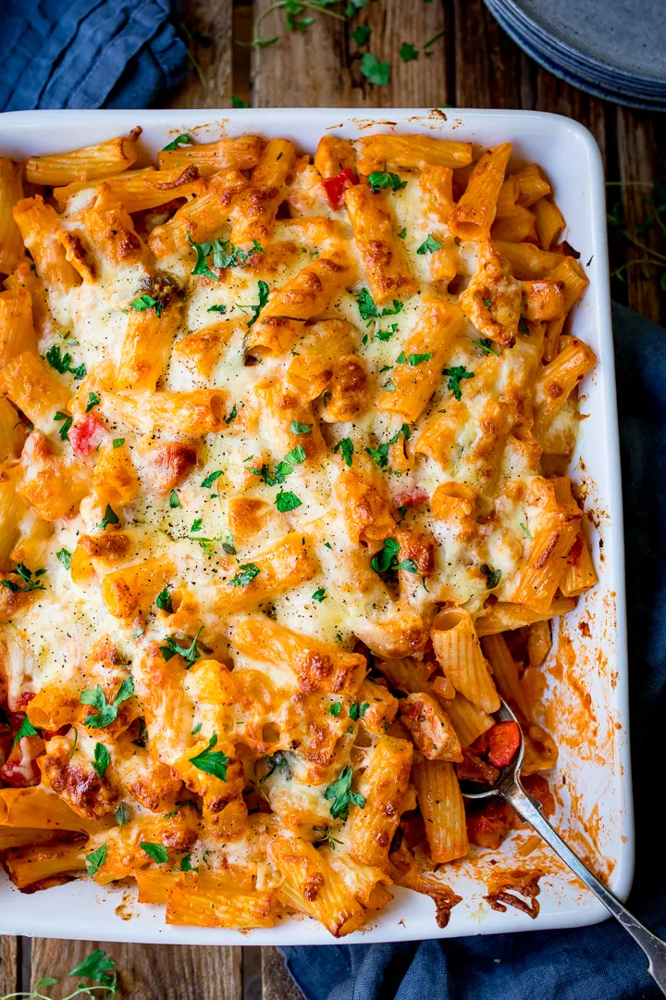

Pasta Bake

Description
This cheesy pasta bake with chicken and bacon is to die for. When you're not eating it you're only thinking about when to eat it next!
Ingredients
- dried pasta
- vegetable oil
- 3 large chicken breasts - diced
- 1 large onion
- red bell pepper
- yellow bell pepper
- garlic
- tomato puree
- oregano
- thyme
- chopped tomatoes
- heavy cream
- spinach
- 6 rashers cooked bacon - chopped
- strong grated cheddar
- grated mozzarella
- fresh parsley
Steps
- Preheat the oven to 190C
- Boil a large pan of water and cook the pasta for 1 minute less than recommended on the pack. Drain.
- Whilst the pasta is cooking, heat the oil on a medium heat, in a large frying pan. Add the chicken, and cook until just sealed - about 5 minutes.
- Add the onion and cook for a further 3-4 minutes until the onion is softened.
- Add the chopped peppers, salt, pepper, garlic, tomato puree, oregano and thyme. Stir and cook for 2-3 minutes.
- Stir in the tinned tomatoes and cream, bring to a gentle bubble, then add the pasta, spinach and cooked bacon. Stir everything together, then transfer to a large baking dish.
- Top with the cheddar and mozzarella, and place in the oven for 20-25 minutes, until the cheese is golden brown.
- Take out of the oven and top with parsley before serving.
Check out these other recipes!